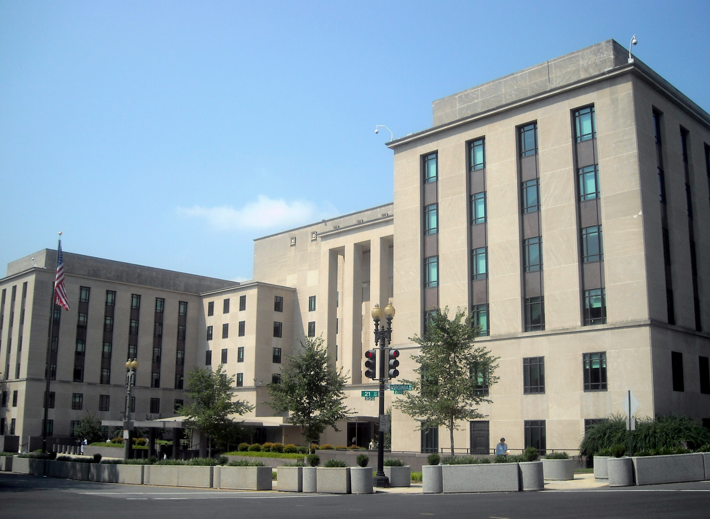

The establishment of diplomatic relations between Uzbekistan and the United States (1991–1992)
The United States recognized Uzbekistan's independence on 25 December 1991, diplomatic relations between the two states were established on 19 February 1992, and the U.S. Embassy in Tashkent opened on 16 March 1992. This history article sets out the exact dates of the process, the first ambassadors, and the context of Uzbekistan's international recognition, drawing on the U.S. Department of State and other official sources.

After Uzbekistan declared independence on 31 August 1991, the country's international recognition proceeded rapidly over the following months. The establishment of diplomatic relations with the United States was one of the important stages of that process. The key dates below are given on the basis of the U.S. Department of State's Office of the Historian (history.state.gov) and other official sources.
U.S. recognition of Uzbekistan
The United States recognized Uzbekistan's independence on 25 December 1991. On that day President George H. W. Bush, in his address on the dissolution of the Soviet Union, announced recognition of the former Union republics. (Source: U.S. Department of State, Office of the Historian.)
The establishment of diplomatic relations
Diplomatic relations between Uzbekistan and the United States were formally established on 19 February 1992; President George H. W. Bush announced this in a press statement. (Source: U.S. Department of State, Office of the Historian.)

The embassy in Tashkent and the first diplomats
The U.S. Embassy in Tashkent was established on 16 March 1992 and was headed by Chargé d'Affaires ad interim Michael Mozur (16 March – 27 April 1992). The first U.S. Ambassador Extraordinary and Plenipotentiary to Uzbekistan was Henry L. Clarke, who served from September 1992 to September 1995. (Source: U.S. Department of State, Office of the Historian; list of U.S. ambassadors.)
Uzbekistan's first ambassador to the United States was Muhammadbobur Malikov: agrément was granted on 10 March 1993, he presented his credentials on 11 June 1993, and he served until June 1994. The new building of Uzbekistan's embassy in Washington was opened during President Islam Karimov's visit in June 1996. (Source: U.S. Department of State; list of ambassadors of Uzbekistan.)
The context of international recognition
The establishment of diplomatic relations coincided with Uzbekistan's broad international recognition. Uzbekistan joined the United Nations on 2 March 1992; it joined the International Monetary Fund on 21 September 1992 (joining the World Bank institutions the same year); and since 1992 it has been a participating State of the Conference/Organization for Security and Co-operation in Europe (CSCE/OSCE). (Sources: UN; IMF.)
High-level visits in later years
Relations between the two states developed in later years through high-level visits. President Islam Karimov made his first visit to Washington on 23–26 June 1996, meeting President Bill Clinton on 25 June and opening the new building of Uzbekistan's embassy. On 11–13 March 2002 Karimov was again in Washington, meeting President George W. Bush on 12 March; the two sides signed a declaration of strategic partnership. (Source: U.S. Department of State, Office of the Historian; Clinton White House archives.)
Conclusion
The recognition of 25 December 1991, the establishment of diplomatic relations on 19 February 1992 and the opening of the embassy on 16 March — these are the stages, confirmed by exact dates, of Uzbekistan's entry into the world community as an independent state. Together with the country's accession in 1992 to major international institutions such as the UN and the IMF, these events laid the diplomatic foundation of the young state.

Sources
- U.S. Department of State, Office of the Historian — A Guide to the United States' History of Recognition: Uzbekistan
- U.S. Department of State, Office of the Historian — Visits by Foreign Leaders: Uzbekistan
- United Nations — Member States (admission dates)
- International Monetary Fund — Uzbekistan and the IMF